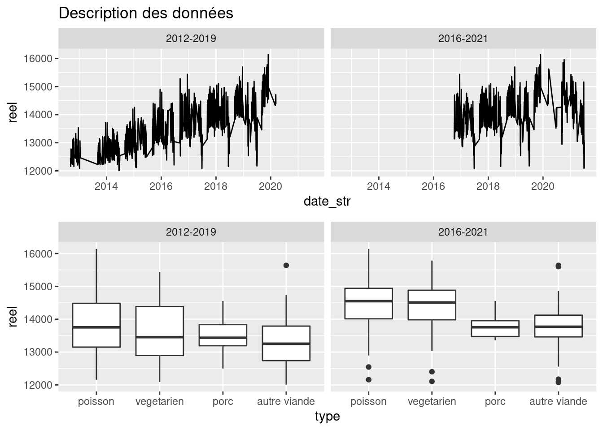

Incidence du type de menus sur la fréquentation des cantines à Nantes
On s’interroge sur l’incidence de la composition du menu sur la fréquentation des écoles. En première approche, on récupère l’ensemble des données de fréquentation depuis 2012. Afin de tenir compte de l’évolution sur cette durée, on analyse deux périodes en parallèle :
- septembre 2012 à décembre 2019, et
- octobre 2019 à décembre 2021
On effectue une première représentation des données.
Le graphique ci-dessus est un diagramme en boîte qui sert à représenter la variabilité d’une donnée. Il se lit de la manière suivante : la ligne horizontale au centre de la boîte correspond à la médiane (on a autant de cas au-dessus qu’en dessous). Le haut et le bas de la boîte blanche englobent 50% des résultats et la ligne verticale englobe 90% des résultats. Les valeurs très éloignées sont représentées par des points. On remarque sur ce graphique que les jours avec la plus forte fréquentation sont ceux avec poisson, suivi des menus végétarien, puis des repas avec porc et enfin On réalise une série de régressions linéaires pour analyser la contribution de la composition des menus sur la fréquentation réelle enregistrée.
| Menus | Nb convives | Part élèves | Nb convives | Part élèves |
|---|---|---|---|---|
| Référence (végétarien) | 13411 | 71.7 % | 14267 | 71.7 % |
| Avec poisson | 302 | 1.6 % | 245 | 1.5 % |
| Avec porc | -259 | -1 % | -323 | -1.4 % |
| Avec viande_sans_porc | -289 | -2 % | -524 | -2.4 % |
| Avec bio | 367 | 0.4 % | 109 | 0.3 % |
Ce tableau résume l’a contribution l’incidence de la composition des menus sur le nombre de convives réellement enregistrés quotidiennement. On a exclu du périmètre étudié les grèves, mercredis et tous les jours avec moins de 12000 convives (anomalies probables). On observe que sur chacune des deux périodes, une moyenne de 71,9% des enfants inscrits venant à la cantines les jours de repas végératien. Cette moyenne est restée stable d’une période étudiée à l’autre, passant de 13619 convives entre 2012 et 2019 à 14348 convives entre 2016 et 2021. En moyenne, la présence de poisson au menu augmente de 1,5% la fréquentation, toute écoles confondues. La fréquentation diminue en revanche avec la présence de viande, et cette diminution va croissant. Sur 2016-2018, on a 1,3% d’inscrits en moins pour des repas avec porc, correspondant en moyenne à 312 élèves en moins. Pour de la viande autre que le porc, on observe moins 2,4% d’élèves inscrits soit 538 élèves en moins en moyenne par rapport à un repas végétarien. Rappelons que pendant la période considérée, chaque menu avec porc s’accompagne d’une alternative sans porc.
Mises en gardes importantes :
- Cette analyse et préliminaire et doit encore être affinée. En particulier, elle ne tient pas compte du jour de la semaine car la composition du menu est trop dépendante du jour de la semaine pour être analysée séparément. Il est donc possible qu’une partie de la variabilité observée et attribuée au plat soit en fait due au jour de la semaine. Une approche plus sophistiquée (dite “bayésienne”) peut être tentée pour distinguer l’effet jour de l’effet menu, mais cela requerrait plus de temps pour des résultats incertains.
- Les résultats affichés ci-dessous sont des moyennes sur l’ensemble de la période considérée, ils ne tiennent pas compte de la variabilité importante observée d’un jour à l’autre en fonction d’effets de calendrier ou menus exceptionnels ou d’ingrédients spéciaux dans les menus (frites, pâtisseries, etc.).